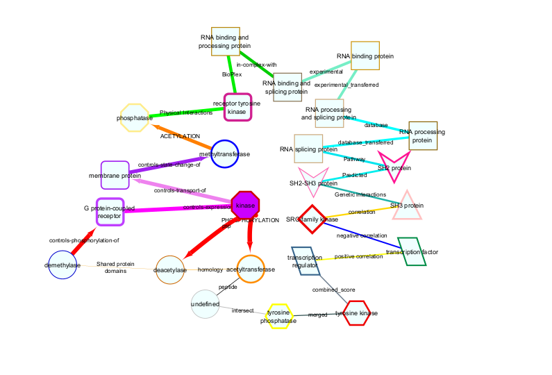

Cytoscape Graphing
Mark Grimes
2025-09-25
Source:vignettes/CytoscapeGraphing.Rmd
CytoscapeGraphing.RmdThe PTMsToPathways Package provides functions to aid in exploration of the resulting networks using the Cytoscape interface. We first describe some visualization choices and then give examples of using Cytoscape to explore data using a top down approach and a bottom up approach.
If you have not already libraried the package, do so now.
Visualization Options
Cytoscape allows us to encode information in the visual network attributes node size, color, shape, and border and edge color, size, and arrow type. In this vignette, we use node attributes to represent the type of protein this gene is and edge attributes to represent different types of interactions from PPI databases, correlations, or links between proteins and their PTMs. Further details can be found by clicking to expand the following table.
Show Detailed Network Attribute Table
| Attribute | Options |
|---|---|
| Node Size | Greater the node size, larger the absolute value of the amount or ratio |
| Node Color | Blue: Negative ratio Yellow: Positive ratio Green: Approximately zero ratio |
| Node Shape | ELLIPSE: unknown ROUND_RECTANGLE: Receptor Tyrosine Kinase VEE: SH2 Protein or SH2-SH3 Protein TRIANGLE: SH3 Protein HEXAGON: Tyrosine Kinase DIAMOND: SRC-family Kinase OCTAGON: Kinase or Phosphatase PARALLELOGRAM: Transcription Factor RECTANGLE: RNA Binding Protein |
| Node Border Colors | Orange: Deacetylase or Acetyltransferase Blue: Demethylase or Methyltransferase Royal Purple: Membrane Protein Red: Kinase, Tyrosine Kinase, or SRC-family Kinase Yellow: Phosphatase or Tyrosine Phosphatase Lilac: G Protein-Coupled Receptor or Receptor Tyrosine Kinase Grey: Default |
| Edge Colors | Red: Phosphorylation, pp, or Controls-Phosphorylation-of Bright Magenta: Controls-Expression-of Dull Magenta: Controls-Transport-of Purple: Controls-state-change-of Blood Orange: Acetylation Lime Green: Physical Interactions Green: BioPlex Dull Green: In-Complex-With Seafoam Green: Experiments or Experiments_Transferred Cyan: Database or Database_Transferred Teal: Pathway or Predicted Dark Turquoise: Genetic Interactions Yellow-Orange: Correlation Royal Blue: Negative Correlation Bright Yellow: Positive Correlation Grey: Combined_Amount or Ratio Dark Grey: Merged Light Grey: Intersect Black: Peptide Orange: Homology Dull Orange: Shared Protein Domains White: Default |
| Arrow Types | Arrow: Phosphorylation, pp, Controls-Phosphorylation-of,
Controls-Expression-of, Controls-Transport-of, Controls-State-Change-of,
Acetylation No Arrow: Default |
To visualize the information in this table, NodeEdgeKey function generates an
example network in Cytoscape like the one shown below.

Node information is based on a function key that maps gene names to a table of information regarding the gene. This may be provided by the user or PTMsToPathways provides an example dataset as function_key.
head(function_key)| Gene.Name | Approved.Name | Hugo.Gene.Family | HPRD.Function | nodeType | Domains | Compartment | Compartment.Overview |
|---|---|---|---|---|---|---|---|
| A1BG | alpha-1-B glycoprotein | Immunoglobulin-like domain containing | Molecular function unknown (GO:0005554) | undefined | IGC2 | undefined | plasma.membrane |
| A1CF | APOBEC1 complementation factor | RNA binding motif containing | RNA binding (GO:0003723) | RNA binding and processing protein | RRM | RNA-associated; nucleus | RNA.associated |
| A2LD1 | undefined | undefined | Molecular function unknown (GO:0005554) | undefined | undefined | undefined | undefined |
| A2M | alpha-2-macroglobulin | undefined | Protease inhibitor activity (GO:0030414) | undefined | A2M | cytosol; secretion | plasma.membrane |
| A2ML1 | alpha-2-macroglobulin-like 1 | undefined | Protease inhibitor activity (GO:0030414) | undefined | undefined | undefined | plasma.membrane |
| A3GALT2 | alpha 1,3-galactosyltransferase 2 | Glycosyltransferase family 6 | Galactosyltransferase activity (GO:0008378) | undefined | TM | undefined | undefined |
Top-Down Approach
It is possible to graph the entire PCN, CFN, and CCCNs in their
entirety, though very large graphs take a long time to graph. One
approach to navigating these data structures is to select nodes from the
large networks in Cytoscape (or in R using
RCy3::selectNodes) and select nearest neighbors or shortest
paths and create a subnetwork in a new window (see the Cytoscape
Manual).
The alternative approach described below is to identify pathways, genes, and PTMs of interest in the R data objects, then make smaller, more interpretable graphs in Cytoscape using RCy3.
For example, we will find names of all pathways in Bioplanet that
contain EGFR. The data object pathways.list is a list,
where the name of the list element is the name of a Bioplanet pathway
and each element is a character vector of the genes in that pathway.
Then we want to find interactions between the pathway “Transmembrane
transport of small molecules” and those pathways.
egfr_pathways <- names(ex_pathways_list)[sapply(1:length(ex_pathways_list), function(x)
{"EGFR" %in% ex_pathways_list[[x]]})]We expect 83 pathways that contain EGFR, so let’s check:
egfr_transporter.pcn <- filter.edges.between(
"Transmembrane transport of small molecules",
egfr_pathways, ex_PCNedgelist)
egfr_transporter_pcn.cy <- filter.edges.between(
"Transmembrane transport of small molecules",
egfr_pathways, pathway.crosstalk.network)
head(egfr_transporter.pcn)These two versions of the PCN show cluster evidence and Jaccard smilarity in adjacent columns (the first case) or as distinct edges (the second case, which can be used to plot this network in cytoscape).
# Graph PCN
pcn.graph.1 <- cytoscape.graph.PCN.pathways(
PCN = egfr_transporter_pcn.cy,
net.name = "EGFR signaling and transmembrane transporters",
Jaccard.edges = TRUE)Let’s zero in on interactions between proteins in the two pathways “EGF/EGFR signaling pathway” and “Transmembrane transport of small molecules” because they have no genes in common, yet the cluster evidence for their interaction is strong. First we extract a network of interactions between the genes in the two pathways. Then we generate a node file for cytoscape. In the following case we include the data extracted from the ptmtable. This is optional, useful if node size and color is used later to indicate values in data.
egfr_transporter.cfn <- filter.edges.0(c(
pathways_list[["EGF/EGFR signaling pathway"]],
pathways_list[["Transmembrane transport of small molecules"]]), cfn)
egfr_transporter.nodes <- make.cytoscape.node.file(
egfr_transporter.cfn, function_key, ptmtable, include.gene.data = TRUE) The function GraphCfn creates a graph using the cluster filtered network in the Cytoscape app. When graphed, Cytoscape provides an interactive interface to view the data. This function requires the edge list file (egfr_transporter.cfn in the example), and node data file (egfr_transporter.nodes).
Generating the graph and setting node size and color
GraphCfn(cfn.edges = egfr_transporter.cfn, cfn.nodes = egfr_transporter.nodes,
Network.title = "CFN", Network.collection = "PTMsToPathways")
# Choose a ratio data column to show which proteins' PTMs were inhibited by a drug
setNodeColorToRatios(plotcol="PC9_ErlotinibRatio")
# There are a lot of edges! To simplify the graph, use the mergeEdges() function.
# This can be done to the entire cfn:
cfn.merged <- mergeEdges(cfn)
# Or just to the cfn made above:
egfr_transporter.cfn.merged <- mergeEdges(egfr_transporter.cfn)
# Graph to compare:
GraphCfn(cfn.edges = egfr_transporter.cfn.merged,
cfn.nodes = egfr_transporter.nodes, Network.title = "CFN",
Network.collection = "PTMsToPathways")
# Choose a ratio data column to show which proteins' PTMs were inhibited by a drug
setNodeColorToRatios(plotcol="PC9_ErlotinibRatio")
# Note that within Cytoscape you can change the column for node size and color
# (two separate tings) in the "Styles" tab
head(egfr_transporter.cfn.merged)Asking questions about signaling pathways that connect proteins
Another example of how to use the network is to ask, what are the paths between two nodes (two proteins)?. We use the function connectNodes.all() to identify all shortest paths between two nodes.
Having identified the pathways, let’s also zoom in further on PTMs to examine which PTMs co-cluster, as indicated by yellow edges between them.
sp1 <- connectNodes.all(c("FYN", 'MET'), ig.graph=NULL,
edgefile = cfn.merged, newgraph = TRUE) #. ***
# To include co-clustered PTMs in the network an extra step is necessary:
sp1_plus <- get.co.clustered.ptms(sp1)
sp1_plus.nodes <- make.cytoscape.node.file(sp1_plus, function_key, ptmtable,
include.gene.data = TRUE,
include.coclustered.PTMs = TRUE)
# Now, graph in cytoscape
GraphCfn(cfn.edges = sp1_plus, cfn.nodes = sp1_plus.nodes,
Network.title = "CFN/CCCN", Network.collection = "PTMsToPathways")
# Choose a ratio data column to show which proteins' PTMs were inhibited by a drug
setNodeColorToRatios(plotcol = "H3122CrizotinibRatio")
head(sp1_plus)Bottom-Up Approach
Example - Investigating how dasatinib affects proteins involved in focal adhesion
Dasatinib exhibits strong binding and inhibitory effects on multiple focal adhesion-associated genes from the BioPlanet list:
• SRC (proto-oncogene tyrosine-protein kinase Src)
• FYN (tyrosine-protein kinase Fyn)
• EGFR (epidermal growth factor receptor)
• ERBB2 (receptor tyrosine-protein kinase erbB-2)
All these genes are directly implicated in focal adhesion signaling regulation. We hypothesize that ptms on proteins involved in focal adhesion will be downregulated by dasatinib.
pt.sub <- ptmtable[, grep("DasatinibRatio", names (ptmtable))]
pt.sub$Sum.Dasat <- rowSums(pt.sub, na.rm = TRUE)
pt.sub <- pt.sub[order(pt.sub$Sum.Dasat, decreasing = FALSE), ]
pt.sub$Gene.Name <- sapply(rownames(pt.sub), function(x){
unlist(strsplit(x, " ", fixed=TRUE))[1]})
fa.genes <- pathways.list[["Focal adhesion"]]
pt.sub.fa <- pt.sub[pt.sub$Gene.Name %in% fa.genes,]
pt.sub.fa.topz <- pt.sub.fa[pt.sub.fa$Sum.Dasat < -2,]
ptms = rownames(pt.sub.fa.topz)
# Employ a helper function to derive a CFN starting with a list of PTMs
cfn.cccn <- ptms_to_cfn(ptms, cfn = cfn.merged, pepsep = ";")
cfn_cccn.nodes <- make.cytoscape.node.file(cfn.cccn, function_key, ptmtable,
include.gene.data = TRUE,
include.coclustered.PTMs = TRUE)
# Let's see what it looks like.
GraphCfn(cfn.edges = cfn.cccn, cfn.nodes = cfn_cccn.nodes,
Network.title = "CFN/CCCN", Network.collection = "PTMsToPathways")
# Choose a ratio data column to show which proteins' PTMs were inhibited by a dasatinib
setNodeColorToRatios(plotcol="H366_DasatinibRatio")
setNodeColorToRatios(plotcol="H2286_DasatinibRatio")
# Note that within Cytoscape you can change the column for node size and color
# (two separate things) in the "Styles" tab